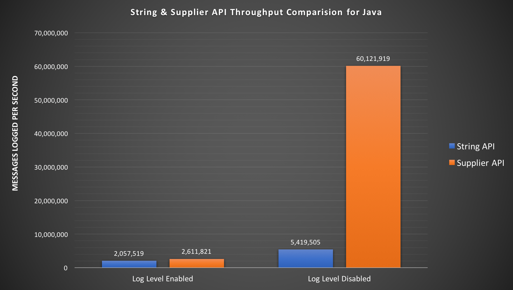

Logging service
Logging Service library provides an advanced logging facility for csw components and services.
Artifacts
- sbt
-
libraryDependencies += "org.tmt" %% "csw-logging_2.12" % "0.1-SNAPSHOT" - maven
-
<dependency> <groupId>org.tmt</groupId> <artifactId>csw-logging_2.12</artifactId> <version>0.1-SNAPSHOT</version> <type>pom</type> </dependency> - gradle
-
dependencies { compile group: "org.tmt", name: "csw-logging_2.12", version: "0.1-SNAPSHOT" }
Configuration
These are the relevant default configuration values for logging
- logging.conf
-
csw-logging { // Default appender and is recommended only for dev setup. // To use multiple appenders give comma seperated list of appenders. appenders = ["csw.services.logging.appenders.StdOutAppender$"] // Recommended for production setup - Uncomment below line and comment above to enable FileAppender //appenders = ["csw.services.logging.appenders.FileAppender$"] component-log-levels { // By default each compoent will use log level specified by `csw-logging.logLevel`. If required, this block allows // overriding log level configuration for one/more components. // -- Example -- // TromboneHcd = debug // TromboneAssembly = error } appender-config { file { // Include standard headers fullHeaders = true // Sort the fields in Json objects sorted = true // Directory to hold log files. logPath = "/tmp/" // Common log messages below this level are removed, none removed when set to trace logLevelLimit = trace // Flag to turn file rotation ON or OFF. Currently log file is rotated daily at 12:00 pm UTC time. By turning this flag off // file rotation will not happen. rotate = true } stdout { // Include standard headers fullHeaders = false // Use colors for log levels color = true // The maximum number of character that should be on a line // This is only a goal; in practice some may contain more characters. width = 80 // Print summary counts when logger is closed summary = true // pretty output - multiple line json pretty = false // Messages below this level are removed, none removed when set to trace logLevelLimit = trace // false Json output; true simple one line text output oneLine = false } } // If component does not specify their log level in component-log-levels block, // Then this will be considered as default log level for that component. logLevel = info // Log level for slf4j messages slf4jLogLevel = info // Log level for Akka messages akkaLogLevel = warn // Enable timing logging time = false //Enable garbage collection logging gc = false }
These values can be overridden directly in the reference.conf or application.conf. Also logLevel for each component can be set in reference.conf/application.conf as follows:
component-log-levels {
tromboneHcd = debug
tromboneAssembly = error
}
Here tromboneHcd and tromboneAssembly is the name of component that will be registered with LocationService. By default all components will log at level specified by csw-logging.logLevel.
Library provides StdOutAppender as default logging appender. To use FileAppender or some custom appender along-with StdOutAppender, override appenders property to include multiple appender in csv format as follows:
appenders = ["csw.services.logging.appenders.FileAppender$", "csw.services.logging.appenders.StdOutAppender$"]
Make sure to provide full path of the appender since it will be spawned using java reflection. In csw code base, a working example of custom appender can be found at: Custom Appender
For StdOutAppender specify the format of log statements in csw-logging.stdout via csw-logging.stdout.pretty and csw-logging.stdout.oneLine.
Turning pretty on or off will produce log statements in following format:
- pretty=true
-
{"@componentName":"my-component-name", "@severity":"INFO", "actor": "akka.tcp://csw-examples-locationServiceClient@10.131.124.238:51256/user/$a", "class":"csw.services.location.LocationServiceExampleClient", "exampleConnection":"LocationServiceExampleComponent-assembly-akka", "file":"LocationServiceExampleClientApp.scala", "line":131, "message":"Attempting to find connection", "obsId":"foo_obs_id", "timestamp":"2017-07-20T08:15:01.657Z" } - pretty=false
-
{"@componentName":"my-component-name","@severity":"INFO","actor":"akka.tcp://csw-examples-locationServiceClient@10.131.124.238:51172/user/$a","class":"csw.services.location.LocationServiceExampleClient","exampleConnection":"LocationServiceExampleComponent-assembly-akka","file":"LocationServiceExampleClientApp.scala","line":131,"message":"Attempting to find connection","obsId":"foo_obs_id","timestamp":"2017-07-20T08:03:08.065Z"}
Similarly, turning oneLine on will produce log statements in following format:
- oneLine=true
-
[INFO] Attempting to find connection (LocationServiceExampleClientApp.scala 131)
- If
oneLineis set totruethen value ofprettywill be ignored
Log Levels
Following Log levels are supported by csw-logging library
- FATAL
- ERROR
- WARN
- INFO
- DEBUG
- TRACE
Library allows separate log levels for the logging API(logLevel), Akka logging(akkaLogLevel), and Slf4J(slf4jLogLevel). The initial values of these are set in the configuration file as seen above. These can be overriden in the application.conf file.
These values can also be changed dynamically by calling methods on LoggingSystem class.
Log Structure
All messages are logged by default as Json. Logs can contain following fields:
@componentName: The name of the component if present@host: The local host name@name: The name of the application being run@version: The version of the application being run@severity: The message level: trace, debug, info, warn, error or fatalactor: The path for an actor when using ActorLoggingclass: The class for ClassLogging or ActorLoggingfile: The file containing the log callkind: Either slf4j or akka. Not present for logger APIline: The line where the message was loggedmessage: The log messagetimestamp: The UTC time when the message was loggedtrace: Information for any exception specified in the logging call
@host,@nameand@versionwill appear in log statements only if fullHeaders is set as true in the configurationfileandlinewill appear only if log statements are being logged from scala classes/actors
Create LoggingSystem
For logging statements to appear in the program, start LoggingSystem at an earliest location in an application. Also note, LoggingSystem should be started only once in an application. The name used while creating LoggingSystem will be used to create the folder and dump all logging files.
- Scala
-
private val host = InetAddress.getLocalHost.getHostName // Only call this once per application val loggingSystem: LoggingSystem = LoggingSystemFactory.start("LocationServiceExampleClient", "0.1", host, system) - Java
-
String host = InetAddress.getLocalHost().getHostName(); loggingSystem = JLoggingSystemFactory.start("JLocationServiceExampleClient", "0.1", host, actorSystem);
- The
hostnamethat is provided while creatingLoggingSystemwill appear in log statements against@hosttag
Stop LoggingSystem
Please ensure to stop LoggingSystem before application exits.
- Scala
-
// Only call this once per application Await.result(loggingSystem.stop, 30.seconds) - Java
-
// Only call this once per application loggingSystem.javaStop().get();
Enable logging
Enable generic logging
To enable logging for some utility code that does not require @componentName in log statements, inherit from following traits:
- Scala
-
- For actor class extend
GenericLogger.Actor
- For non-actor class extend
GenericLogger.Simple
- For actor class extend
- Java
-
- For actor class inherit
JGenericLoggerActor
- For non-actor class inherit
JGenericLogger
- For actor class inherit
Enable component level logging
To include @componentName in your log statements, create an object/abstract class/interface as follows:
- Scala
-
object ExampleLogger extends ComponentLogger("my-component-name") - Actor Java Class
-
//JExampleLoggerActor is used for actor java class only public abstract class JExampleLoggerActor extends JComponentLoggerActor { @Override public String componentName() { return "my-component-name"; } } - Non-Actor Java class
-
//JExampleLogger is used for non-actor java class only public interface JExampleLogger extends JComponentLogger { @Override default String componentName() { return "examples"; } }
Then, inherit following object/interface:
- Scala
-
- For actor class extend
ExampleLogger.Actor
- For non-actor class extend
ExampleLogger.Simple
- For actor class extend
- Java
-
- For actor class inherit
JExampleLoggerActor
- For non-actor class inherit
JExampleLogger
- For actor class inherit
- Scala
-
class LocationServiceExampleClient(locationService: LocationService, loggingSystem: LoggingSystem)(implicit mat: Materializer) extends ExampleLogger.Actor - Java
-
public class JLocationServiceExampleClient extends JExampleLoggerActor { private ILogger log = getLogger();
Loggers for classes can be mixed in a similar way
Log statements
A basic info statement can be written as follows:
- Scala
-
log.info(s"Result of the find call: $findResult") - Java
-
log.info(() -> "Result of the find call : None");
The output of log statement will be:
- Scala
-
{"@componentName":"my-component-name", "@severity":"INFO", "actor": "akka.tcp://csw-examples-locationServiceClient@10.131.124.238:50721/user/$a", "class":"csw.services.location.LocationServiceExampleClient", "file":"LocationServiceExampleClientApp.scala", "line":141, "message":"Result of the find call: None", "timestamp":"2017-07-20T06:47:46.468Z" } - Java
-
{"@componentName":"my-component-name", "@severity":"INFO", "actor": "akka.tcp://csw-examples-locationServiceClient@10.131.124.238:50737/user/LocationServiceExampleClient", "class":"csw.services.location.JLocationServiceExampleClient", "message":"Result of the find call : None", "timestamp":"2017-07-20T06:49:13.059Z" }
Library allows usage of Map in message as follows:
- Scala
-
log.info("Attempting to find connection", Map(Keys.OBS_ID → "foo_obs_id", "exampleConnection" → exampleConnection.name)) - Java
-
log.info(() -> "Attempting to find connection", () -> { Map<String, Object> map = new HashMap<>(); map.put(JKeys.OBS_ID, "foo_obs_id"); map.put("exampleConnection", exampleConnection.name()); return map; });
The output of log statement will be:
- Scala
-
{"@componentName":"my-component-name", "@severity":"INFO", "actor": "akka.tcp://csw-examples-locationServiceClient@10.131.124.238:50721/user/$a", "class":"csw.services.location.LocationServiceExampleClient", "exampleConnection":"LocationServiceExampleComponent-assembly-akka", "file":"LocationServiceExampleClientApp.scala", "line":131, "message":"Attempting to find connection", "obsId":"foo_obs_id", "timestamp":"2017-07-20T06:47:46.464Z" } - Java
-
{"@componentName":"my-component-name", "@severity":"INFO", "actor": "akka.tcp://csw-examples-locationServiceClient@10.131.124.238:50737/user/LocationServiceExampleClient", "class":"csw.services.location.JLocationServiceExampleClient", "exampleConnection":"LocationServiceExampleComponent-assembly-akka", "message":"Attempting to find connection", "obsId":"foo_obs_id", "timestamp":"2017-07-20T06:49:13.054Z" }
Library allows to log an error with it’s full stacktrace as follows:
- Scala
-
log.error(runtimeException.getMessage, ex = runtimeException) - Java
-
log.info(() -> runtimeException.getMessage(), runtimeException);
- It is recommended in java to use api that has
Supplierformsgandmapsince it is more efficient compared to non-supplier version of it
Source code for examples
Performance
Performance results documented on this page is measured in terms of Throughput and obtained with the JMH Java benchmark harness. Sourcecode for all the JMH benchmarks can be found here at CSW Benchmarks
Wikipedia definition of Throughput is the maximum rate of production or the maximum rate at which something can be processed. In our case, throughput is defined as how many messages can be logged in a certain period of time.
Test Machine Configuration :
- MacBook Pro (Retina, 15-inch, Mid 2015)
- Processor Name: Intel Core i7
- Processor Speed: 2.8 GHz
- No. of Processors: 1
- No. of Cores: 4
- L2 Cache (per Core): 256 KB
- L3 Cache: 6 MB
- Memory: 16 GB 1600 MHz DDR3
- JDK: 1.8.0_121
Scala Logging : Appender’s Throughput

Above graph includes the throughput results for File and StdOut appender’s using scala’s logging API. Java’s logging API throughput results are included further down this page.
As shown in the above graph, experiment was carried out for 1, 2, 4, 8 and 16 threads. That means, multiple threads are logging messages concurrently.
- Numbers indicated in the graph does not mean that those number of messages are actually written to file or console. These are the number of logging messages sent to LogActor asynchronously for the period of one second.
- It is the responsibility of LogActor to write these messages to file or console.
- LogActor uses BoundedMailbox with a mailbox-capacity = 262144, messages are dropped if mailbox gets full.
Scala Logging : Throughput Comparision (Log Level Enabled vs Disabled)
Below graph depicts the throughput of scala’s logging API when log level was enabled and disabled. As we are using by name parameter in the Scala’s logging API, numbers are very high in case of log level is disabled. String parameter which is passed in the logger API does not get evaluated if log level is disabled.

Java Logging - String Vs Supplier API Performance
Below graph shows the throughput of Java’s string and supplier API. Numbers shown in graph are total number of messages logged per second using String and Supplier version of API provided by CSW Logging. This graph is produced based on the result generated by JE2ELoggingBenchmark

- As you can see in the above graph, Supplier version of log API is very efficient and throughput is much higher than String version. It is recommended to use Supplier API.
Acknowledgement
The codebase in csw-logging module is based on persist-logging library. We appreciate efforts put in by authors of the persist-logging library which made our development fast and easy.